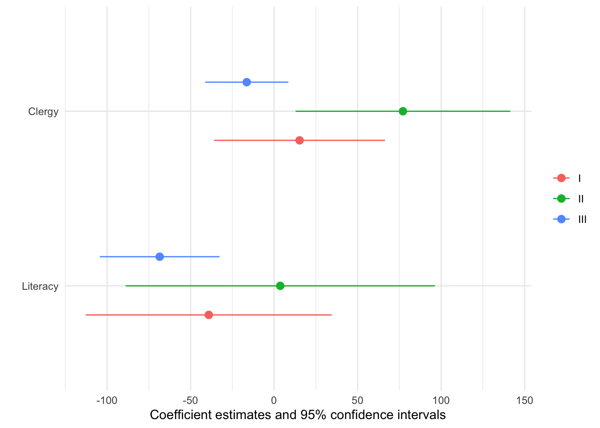

Getting started
To begin, load the modelsummary package and download data from the Rdatasets archive:
Data Summaries
Quick overview of the data:
datasummary_skim(dat)| Unique | Missing Pct. | Mean | SD | Min | Median | Max | Histogram | |
|---|---|---|---|---|---|---|---|---|
| Donations | 85 | 0 | 7075.5 | 5834.6 | 1246.0 | 5020.0 | 37015.0 |  |
| Literacy | 50 | 0 | 39.3 | 17.4 | 12.0 | 38.0 | 74.0 |  |
| Commerce | 84 | 0 | 42.8 | 25.0 | 1.0 | 42.5 | 86.0 |  |
| Crime_pers | 85 | 0 | 19754.4 | 7504.7 | 2199.0 | 18748.5 | 37014.0 |  |
| Crime_prop | 86 | 0 | 7843.1 | 3051.4 | 1368.0 | 7595.0 | 20235.0 |  |
| Clergy | 85 | 0 | 43.4 | 25.0 | 1.0 | 43.5 | 86.0 |  |
| Small | N | % | ||||||
| FALSE | 43 | 50.0 | ||||||
| TRUE | 43 | 50.0 |
Balance table (aka “Table 1”) with differences in means by subgroups:
datasummary_balance(~Small, dat)| FALSE (N=43) | TRUE (N=43) | |||||
|---|---|---|---|---|---|---|
| Mean | Std. Dev. | Mean | Std. Dev. | Diff. in Means | Std. Error | |
| Donations | 7258.5 | 6194.1 | 6892.6 | 5519.0 | -365.9 | 1265.2 |
| Literacy | 37.9 | 19.1 | 40.6 | 15.6 | 2.7 | 3.8 |
| Commerce | 42.7 | 24.6 | 43.0 | 25.7 | 0.3 | 5.4 |
| Crime_pers | 18040.6 | 7638.4 | 21468.2 | 7044.3 | 3427.7 | 1584.6 |
| Crime_prop | 8422.5 | 3406.7 | 7263.7 | 2559.3 | -1158.8 | 649.8 |
| Clergy | 39.1 | 26.7 | 47.7 | 22.7 | 8.6 | 5.3 |
Correlation table:
| Donations | Literacy | Commerce | Crime_pers | Crime_prop | Clergy | |
|---|---|---|---|---|---|---|
| Donations | 1 | . | . | . | . | . |
| Literacy | -.13 | 1 | . | . | . | . |
| Commerce | .30 | -.58 | 1 | . | . | . |
| Crime_pers | -.04 | -.04 | .05 | 1 | . | . |
| Crime_prop | -.13 | -.37 | .41 | .27 | 1 | . |
| Clergy | .09 | -.17 | -.12 | .26 | -.07 | 1 |
Two variables and two statistics, nested in subgroups:
datasummary(Literacy + Commerce ~ Small * (mean + sd), dat)| FALSE | TRUE | |||
|---|---|---|---|---|
| mean | sd | mean | sd | |
| Literacy | 37.88 | 19.08 | 40.63 | 15.57 |
| Commerce | 42.65 | 24.59 | 42.95 | 25.75 |
Model Summaries
Estimate a linear model and display the results:
mod <- lm(Donations ~ Crime_prop, data = dat)
modelsummary(mod)| (1) | |
|---|---|
| (Intercept) | 9065.287 |
| (1738.926) | |
| Crime_prop | -0.254 |
| (0.207) | |
| Num.Obs. | 86 |
| R2 | 0.018 |
| R2 Adj. | 0.006 |
| AIC | 1739.0 |
| BIC | 1746.4 |
| Log.Lik. | -866.516 |
| F | 1.505 |
| RMSE | 5749.29 |
Now estimate five regression models, display the results side-by-side, and use the group_tt() function from the tinytable package to add column labels:
library(tinytable)
models <- list(
"I" = lm(Donations ~ Literacy + Clergy, data = dat),
"II" = lm(Crime_pers ~ Literacy + Clergy, data = dat),
"III" = lm(Crime_prop ~ Literacy + Clergy, data = dat),
"IV" = glm(Crime_pers ~ Literacy + Commerce, family = poisson, data = dat),
"V" = glm(Donations ~ Literacy + Commerce, family = poisson, data = dat)
)
modelsummary(models, stars = TRUE, gof_omit = "IC|Adj|F|RMSE|Log") |>
group_tt(j = list("Linear" = 2:4, "Poisson" = 5:6))| Linear | Poisson | ||||
|---|---|---|---|---|---|
| I | II | III | IV | V | |
| + p | |||||
| (Intercept) | 7948.667*** | 16259.384*** | 11243.544*** | 9.876*** | 8.241*** |
| (2078.276) | (2611.140) | (1011.240) | (0.003) | (0.006) | |
| Literacy | -39.121 | 3.680 | -68.507*** | -0.000*** | 0.003*** |
| (37.052) | (46.552) | (18.029) | (0.000) | (0.000) | |
| Clergy | 15.257 | 77.148* | -16.376 | ||
| (25.735) | (32.334) | (12.522) | |||
| Commerce | 0.001*** | 0.011*** | |||
| (0.000) | (0.000) | ||||
| Num.Obs. | 86 | 86 | 86 | 86 | 86 |
| R2 | 0.020 | 0.065 | 0.152 | ||
Now, save it to a Microsoft Word document:
modelsummary(models, output = "table.docx")And draw a coefficient plot:
ols <- models[1:3]
modelplot(ols, coef_omit = "Intercept")